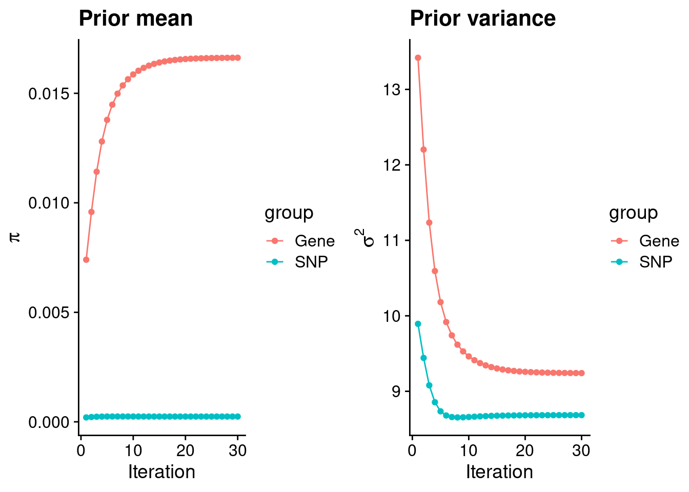
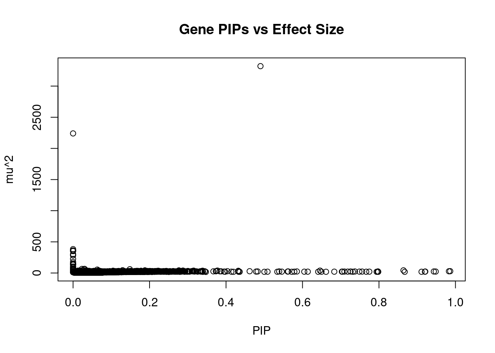
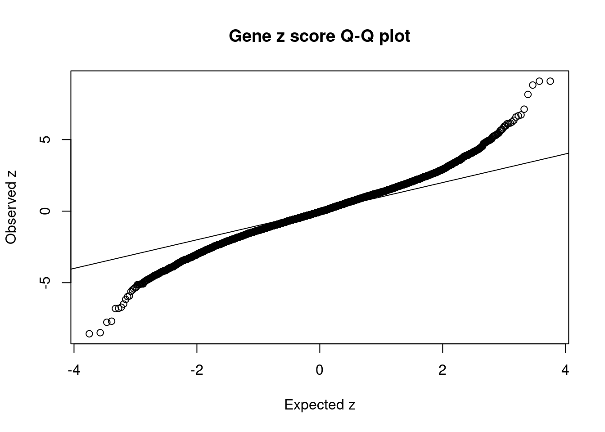
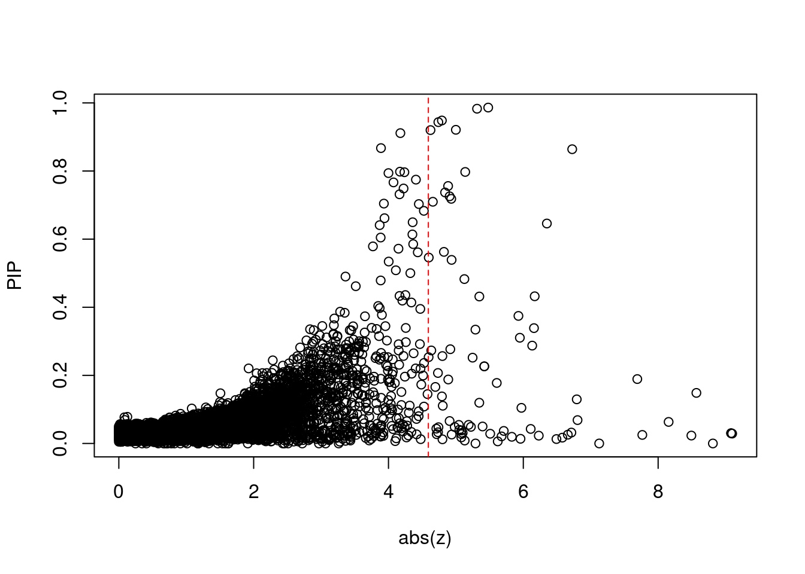
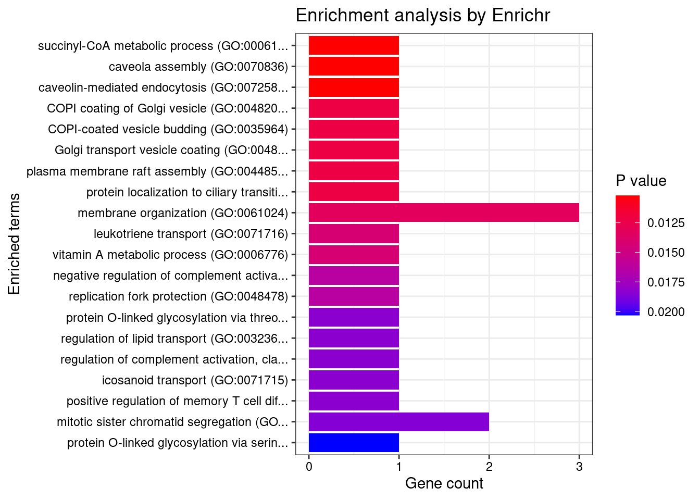
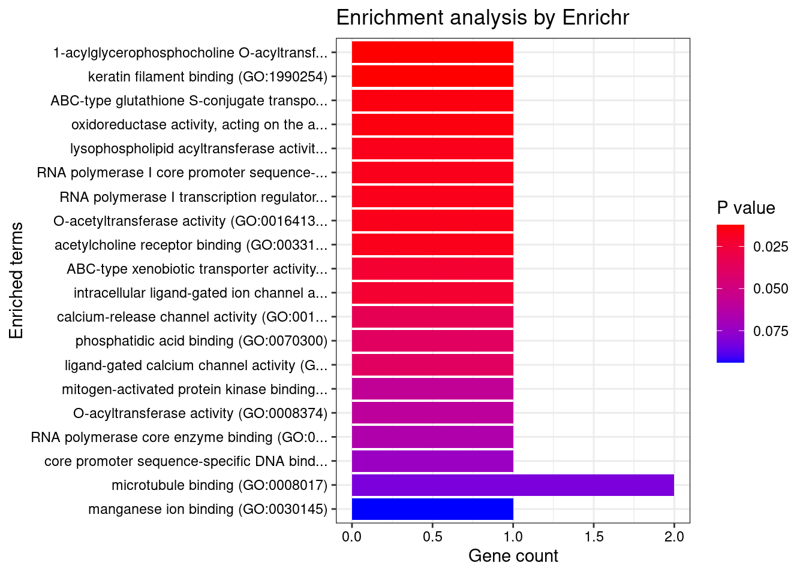
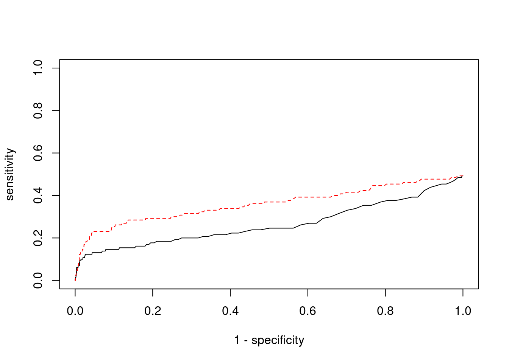

Autism - Brain Cerebellar Hemisphere
sheng Qian
2021-2-6
Last updated: 2022-02-27
Checks: 6 1
Knit directory: cTWAS_analysis/
This reproducible R Markdown analysis was created with workflowr (version 1.6.2). The Checks tab describes the reproducibility checks that were applied when the results were created. The Past versions tab lists the development history.
Great! Since the R Markdown file has been committed to the Git repository, you know the exact version of the code that produced these results.
Great job! The global environment was empty. Objects defined in the global environment can affect the analysis in your R Markdown file in unknown ways. For reproduciblity it’s best to always run the code in an empty environment.
The command set.seed(20211220) was run prior to running the code in the R Markdown file. Setting a seed ensures that any results that rely on randomness, e.g. subsampling or permutations, are reproducible.
Great job! Recording the operating system, R version, and package versions is critical for reproducibility.
Nice! There were no cached chunks for this analysis, so you can be confident that you successfully produced the results during this run.
Using absolute paths to the files within your workflowr project makes it difficult for you and others to run your code on a different machine. Change the absolute path(s) below to the suggested relative path(s) to make your code more reproducible.
| absolute | relative |
|---|---|
| /project2/xinhe/shengqian/cTWAS/cTWAS_analysis/data/ | data |
| /project2/xinhe/shengqian/cTWAS/cTWAS_analysis/code/ctwas_config.R | code/ctwas_config.R |
Great! You are using Git for version control. Tracking code development and connecting the code version to the results is critical for reproducibility.
The results in this page were generated with repository version 3dd5b4c. See the Past versions tab to see a history of the changes made to the R Markdown and HTML files.
Note that you need to be careful to ensure that all relevant files for the analysis have been committed to Git prior to generating the results (you can use wflow_publish or wflow_git_commit). workflowr only checks the R Markdown file, but you know if there are other scripts or data files that it depends on. Below is the status of the Git repository when the results were generated:
Ignored files:
Ignored: .ipynb_checkpoints/
Ignored: data/AF/
Untracked files:
Untracked: Rplot.png
Untracked: analysis/.ipynb_checkpoints/
Untracked: analysis/Autism_Brain_Amygdala.Rmd
Untracked: analysis/Autism_Brain_Anterior_cingulate_cortex_BA24.Rmd
Untracked: analysis/Autism_Brain_Caudate_basal_ganglia.Rmd
Untracked: analysis/Autism_Brain_Cerebellar_Hemisphere.Rmd
Untracked: analysis/Autism_Brain_Cerebellum.Rmd
Untracked: analysis/Autism_Brain_Cortex.Rmd
Untracked: analysis/Autism_Brain_Frontal_Cortex_BA9.Rmd
Untracked: analysis/Autism_Brain_Hippocampus.Rmd
Untracked: analysis/Autism_Brain_Hypothalamus.Rmd
Untracked: analysis/Autism_Brain_Nucleus_accumbens_basal_ganglia.Rmd
Untracked: analysis/Autism_Brain_Putamen_basal_ganglia.Rmd
Untracked: analysis/Autism_Brain_Spinal_cord_cervical_c-1.Rmd
Untracked: analysis/Autism_Brain_Substantia_nigra.Rmd
Untracked: analysis/Glucose_Adipose_Subcutaneous.Rmd
Untracked: analysis/Glucose_Adipose_Visceral_Omentum.Rmd
Untracked: analysis/Splicing_Test.Rmd
Untracked: code/.ipynb_checkpoints/
Untracked: code/AF_out/
Untracked: code/Autism_out/
Untracked: code/BMI_S_out/
Untracked: code/BMI_out/
Untracked: code/Glucose_out/
Untracked: code/LDL_S_out/
Untracked: code/SCZ_out/
Untracked: code/T2D_out/
Untracked: code/ctwas_config.R
Untracked: code/mapping.R
Untracked: code/out/
Untracked: code/run_AF_analysis.sbatch
Untracked: code/run_AF_analysis.sh
Untracked: code/run_AF_ctwas_rss_LDR.R
Untracked: code/run_Autism_analysis.sbatch
Untracked: code/run_Autism_analysis.sh
Untracked: code/run_Autism_ctwas_rss_LDR.R
Untracked: code/run_BMI_analysis.sbatch
Untracked: code/run_BMI_analysis.sh
Untracked: code/run_BMI_analysis_S.sbatch
Untracked: code/run_BMI_analysis_S.sh
Untracked: code/run_BMI_ctwas_rss_LDR.R
Untracked: code/run_BMI_ctwas_rss_LDR_S.R
Untracked: code/run_Glucose_analysis.sbatch
Untracked: code/run_Glucose_analysis.sh
Untracked: code/run_Glucose_ctwas_rss_LDR.R
Untracked: code/run_LDL_analysis_S.sbatch
Untracked: code/run_LDL_analysis_S.sh
Untracked: code/run_LDL_ctwas_rss_LDR_S.R
Untracked: code/run_SCZ_analysis.sbatch
Untracked: code/run_SCZ_analysis.sh
Untracked: code/run_SCZ_ctwas_rss_LDR.R
Untracked: code/run_T2D_analysis.sbatch
Untracked: code/run_T2D_analysis.sh
Untracked: code/run_T2D_ctwas_rss_LDR.R
Untracked: data/.ipynb_checkpoints/
Untracked: data/Autism/
Untracked: data/BMI/
Untracked: data/BMI_S/
Untracked: data/Glucose/
Untracked: data/LDL_S/
Untracked: data/SCZ/
Untracked: data/T2D/
Untracked: data/TEST/
Untracked: data/UKBB/
Untracked: data/UKBB_SNPs_Info.text
Untracked: data/gene_OMIM.txt
Untracked: data/gene_pip_0.8.txt
Untracked: data/mashr_Heart_Atrial_Appendage.db
Untracked: data/mashr_sqtl/
Untracked: data/summary_known_genes_annotations.xlsx
Untracked: data/untitled.txt
Unstaged changes:
Modified: analysis/BMI_Brain_Amygdala_S.Rmd
Modified: analysis/BMI_Brain_Anterior_cingulate_cortex_BA24_S.Rmd
Modified: analysis/BMI_Brain_Caudate_basal_ganglia_S.Rmd
Modified: analysis/BMI_Brain_Cerebellar_Hemisphere_S.Rmd
Modified: analysis/BMI_Brain_Cerebellum_S.Rmd
Modified: analysis/BMI_Brain_Cortex.Rmd
Modified: analysis/BMI_Brain_Cortex_S.Rmd
Modified: analysis/BMI_Brain_Frontal_Cortex_BA9_S.Rmd
Modified: analysis/BMI_Brain_Hippocampus_S.Rmd
Modified: analysis/BMI_Brain_Hypothalamus_S.Rmd
Modified: analysis/BMI_Brain_Nucleus_accumbens_basal_ganglia_S.Rmd
Modified: analysis/BMI_Brain_Putamen_basal_ganglia_S.Rmd
Modified: analysis/BMI_Brain_Spinal_cord_cervical_c-1_S.Rmd
Modified: analysis/BMI_Brain_Substantia_nigra_S.Rmd
Modified: analysis/LDL_Liver_S.Rmd
Modified: analysis/index.Rmd
Note that any generated files, e.g. HTML, png, CSS, etc., are not included in this status report because it is ok for generated content to have uncommitted changes.
These are the previous versions of the repository in which changes were made to the R Markdown (analysis/SCZ_Brain_Cerebellar_Hemisphere.Rmd) and HTML (docs/SCZ_Brain_Cerebellar_Hemisphere.html) files. If you’ve configured a remote Git repository (see ?wflow_git_remote), click on the hyperlinks in the table below to view the files as they were in that past version.
| File | Version | Author | Date | Message |
|---|---|---|---|---|
| Rmd | 3dd5b4c | sq-96 | 2022-02-27 | update |
Weight QC
#number of imputed weights
nrow(qclist_all)[1] 11359#number of imputed weights by chromosome
table(qclist_all$chr)
1 2 3 4 5 6 7 8 9 10 11 12 13 14 15 16
1087 778 650 422 552 565 566 427 449 455 705 643 215 384 374 548
17 18 19 20 21 22
712 170 889 335 135 298 #number of imputed weights without missing variants
sum(qclist_all$nmiss==0)[1] 8808#proportion of imputed weights without missing variants
mean(qclist_all$nmiss==0)[1] 0.7754Check convergence of parameters

#estimated group prior
estimated_group_prior <- group_prior_rec[,ncol(group_prior_rec)]
names(estimated_group_prior) <- c("gene", "snp")
estimated_group_prior["snp"] <- estimated_group_prior["snp"]*thin #adjust parameter to account for thin argument
print(estimated_group_prior) gene snp
0.0166240 0.0002413 #estimated group prior variance
estimated_group_prior_var <- group_prior_var_rec[,ncol(group_prior_var_rec)]
names(estimated_group_prior_var) <- c("gene", "snp")
print(estimated_group_prior_var) gene snp
9.241 8.684 #report sample size
print(sample_size)[1] 82315#report group size
group_size <- c(nrow(ctwas_gene_res), n_snps)
print(group_size)[1] 11359 7573890#estimated group PVE
estimated_group_pve <- estimated_group_prior_var*estimated_group_prior*group_size/sample_size #check PVE calculation
names(estimated_group_pve) <- c("gene", "snp")
print(estimated_group_pve) gene snp
0.0212 0.1928 #compare sum(PIP*mu2/sample_size) with above PVE calculation
c(sum(ctwas_gene_res$PVE),sum(ctwas_snp_res$PVE))[1] 0.1128 1.4250Genes with highest PIPs

genename region_tag susie_pip mu2 PVE z num_eqtl
10988 ZNF823 19_10 0.9863 29.29 0.0003509 5.479 2
4143 FEZF1 7_74 0.9829 27.95 0.0003338 -5.314 1
5783 GALNT2 1_117 0.9483 23.38 0.0002693 4.792 1
6241 ARFGAP2 11_29 0.9435 24.43 0.0002800 4.740 1
2207 RUNDC3B 7_54 0.9210 23.36 0.0002614 5.000 1
12095 AC012074.2 2_15 0.9201 21.31 0.0002382 4.623 1
13214 RP11-230C9.4 6_102 0.9113 19.95 0.0002208 -4.176 3
11339 DISP3 1_8 0.8673 19.04 0.0002006 3.889 2
3099 SF3B1 2_117 0.8640 42.46 0.0004457 6.725 1
9323 LPCAT4 15_10 0.7981 19.72 0.0001912 -4.171 2
5788 CEP170 1_128 0.7972 25.05 0.0002427 -5.138 2
1148 RRN3 16_15 0.7964 20.44 0.0001978 -4.236 1
13246 RP1-224A6.9 1_15 0.7939 19.69 0.0001899 -4.000 1
13014 TBC1D29 17_18 0.7747 21.67 0.0002040 -4.407 1
9372 LY6H 8_94 0.7666 20.46 0.0001906 4.074 1
3842 ABCC10 6_33 0.7560 22.93 0.0002106 -4.885 2
5459 RLBP1 15_41 0.7487 22.33 0.0002031 -4.224 1
11358 TCTN1 12_67 0.7370 24.35 0.0002180 4.840 1
174 ZNF207 17_19 0.7316 20.31 0.0001805 4.164 1
499 TRAPPC3 1_22 0.7257 24.20 0.0002133 4.907 1Genes with largest effect sizes

genename region_tag susie_pip mu2 PVE z num_eqtl
3504 CRHR1 17_27 4.901e-01 3320.10 1.977e-02 3.3623 1
2449 WNT3 17_27 0.000e+00 2240.49 0.000e+00 -2.4566 1
12178 HLA-DQA2 6_26 2.229e-13 382.90 1.037e-15 0.3447 1
11553 CLIC1 6_26 1.674e-12 361.24 7.345e-15 8.8122 1
9601 HLA-DQB1 6_26 4.682e-13 359.75 2.046e-15 1.6253 2
11903 ARL17B 17_27 0.000e+00 351.12 0.000e+00 -3.0672 1
11078 HLA-DRB5 6_26 1.518e-13 300.99 5.549e-16 2.9680 1
10673 HLA-DRB1 6_26 1.292e-13 282.04 4.428e-16 2.4321 1
11298 HSPA1A 6_26 6.655e-13 226.53 1.831e-15 7.1259 1
9768 ACBD4 17_27 0.000e+00 176.90 0.000e+00 1.9129 3
12355 C4A 6_26 2.929e-12 153.42 5.460e-15 5.2909 1
10074 SPATA32 17_27 0.000e+00 142.76 0.000e+00 -0.5855 1
4955 NMT1 17_27 0.000e+00 139.79 0.000e+00 2.7209 1
10140 FMNL1 17_27 0.000e+00 132.09 0.000e+00 0.6638 1
10790 HLA-DQA1 6_26 1.145e-12 103.68 1.443e-15 -0.7786 1
11299 HSPA1L 6_26 2.491e-13 92.79 2.808e-16 0.9130 1
7012 ARHGAP27 17_27 0.000e+00 75.40 0.000e+00 1.0116 2
2458 GOSR2 17_27 0.000e+00 68.35 0.000e+00 -2.5096 1
4785 RINT1 7_65 0.000e+00 66.77 0.000e+00 1.1750 1
5086 PGBD1 6_22 2.321e-02 65.25 1.840e-05 -8.4933 1Genes with highest PVE
genename region_tag susie_pip mu2 PVE z num_eqtl
3504 CRHR1 17_27 0.4901 3320.10 0.0197678 3.362 1
3099 SF3B1 2_117 0.8640 42.46 0.0004457 6.725 1
10988 ZNF823 19_10 0.9863 29.29 0.0003509 5.479 2
4143 FEZF1 7_74 0.9829 27.95 0.0003338 -5.314 1
8510 INO80E 16_24 0.6459 38.23 0.0003000 6.350 1
6241 ARFGAP2 11_29 0.9435 24.43 0.0002800 4.740 1
5783 GALNT2 1_117 0.9483 23.38 0.0002693 4.792 1
2207 RUNDC3B 7_54 0.9210 23.36 0.0002614 5.000 1
5788 CEP170 1_128 0.7972 25.05 0.0002427 -5.138 2
12095 AC012074.2 2_15 0.9201 21.31 0.0002382 4.623 1
13214 RP11-230C9.4 6_102 0.9113 19.95 0.0002208 -4.176 3
11358 TCTN1 12_67 0.7370 24.35 0.0002180 4.840 1
499 TRAPPC3 1_22 0.7257 24.20 0.0002133 4.907 1
3842 ABCC10 6_33 0.7560 22.93 0.0002106 -4.885 2
13014 TBC1D29 17_18 0.7747 21.67 0.0002040 -4.407 1
5459 RLBP1 15_41 0.7487 22.33 0.0002031 -4.224 1
11339 DISP3 1_8 0.8673 19.04 0.0002006 3.889 2
9329 DIRAS1 19_3 0.7097 23.13 0.0001994 -4.658 1
1148 RRN3 16_15 0.7964 20.44 0.0001978 -4.236 1
4509 REEP2 5_82 0.7183 22.28 0.0001944 4.931 2Genes with largest z scores
genename region_tag susie_pip mu2 PVE z num_eqtl
10334 BTN3A2 6_20 2.898e-02 64.03 2.254e-05 9.098 2
11884 HCG11 6_20 3.007e-02 64.70 2.363e-05 9.082 1
12879 CTA-14H9.5 6_20 3.007e-02 64.70 2.363e-05 9.082 1
11553 CLIC1 6_26 1.674e-12 361.24 7.345e-15 8.812 1
2870 PRSS16 6_21 1.485e-01 60.49 1.091e-04 -8.567 1
5086 PGBD1 6_22 2.321e-02 65.25 1.840e-05 -8.493 1
6038 ABT1 6_20 6.328e-02 54.46 4.187e-05 8.156 1
2826 TRIM38 6_20 2.509e-02 46.56 1.419e-05 -7.765 2
6221 CNNM2 10_66 1.891e-01 35.94 8.256e-05 -7.691 1
11298 HSPA1A 6_26 6.655e-13 226.53 1.831e-15 7.126 1
7375 TYW5 2_118 6.863e-02 36.54 3.046e-05 -6.805 2
10488 ZSCAN23 6_22 1.296e-01 44.40 6.989e-05 -6.793 1
3099 SF3B1 2_117 8.640e-01 42.46 4.457e-04 6.725 1
1323 PITPNM2 12_75 3.200e-02 41.17 1.601e-05 -6.713 1
10845 ZSCAN26 6_22 2.575e-02 29.98 9.377e-06 6.660 2
2710 OGFOD2 12_75 1.707e-02 39.53 8.197e-06 6.579 1
9828 ARL6IP4 12_75 1.298e-02 38.31 6.044e-06 -6.491 1
8510 INO80E 16_24 6.459e-01 38.23 3.000e-04 6.350 1
10881 ZNF165 6_22 2.295e-02 26.72 7.449e-06 6.229 2
9199 ATG13 11_28 4.322e-01 35.28 1.852e-04 -6.169 1Comparing z scores and PIPs

[1] 0.007307 genename region_tag susie_pip mu2 PVE z num_eqtl
10334 BTN3A2 6_20 2.898e-02 64.03 2.254e-05 9.098 2
11884 HCG11 6_20 3.007e-02 64.70 2.363e-05 9.082 1
12879 CTA-14H9.5 6_20 3.007e-02 64.70 2.363e-05 9.082 1
11553 CLIC1 6_26 1.674e-12 361.24 7.345e-15 8.812 1
2870 PRSS16 6_21 1.485e-01 60.49 1.091e-04 -8.567 1
5086 PGBD1 6_22 2.321e-02 65.25 1.840e-05 -8.493 1
6038 ABT1 6_20 6.328e-02 54.46 4.187e-05 8.156 1
2826 TRIM38 6_20 2.509e-02 46.56 1.419e-05 -7.765 2
6221 CNNM2 10_66 1.891e-01 35.94 8.256e-05 -7.691 1
11298 HSPA1A 6_26 6.655e-13 226.53 1.831e-15 7.126 1
7375 TYW5 2_118 6.863e-02 36.54 3.046e-05 -6.805 2
10488 ZSCAN23 6_22 1.296e-01 44.40 6.989e-05 -6.793 1
3099 SF3B1 2_117 8.640e-01 42.46 4.457e-04 6.725 1
1323 PITPNM2 12_75 3.200e-02 41.17 1.601e-05 -6.713 1
10845 ZSCAN26 6_22 2.575e-02 29.98 9.377e-06 6.660 2
2710 OGFOD2 12_75 1.707e-02 39.53 8.197e-06 6.579 1
9828 ARL6IP4 12_75 1.298e-02 38.31 6.044e-06 -6.491 1
8510 INO80E 16_24 6.459e-01 38.23 3.000e-04 6.350 1
10881 ZNF165 6_22 2.295e-02 26.72 7.449e-06 6.229 2
9199 ATG13 11_28 4.322e-01 35.28 1.852e-04 -6.169 1GO enrichment analysis for genes with PIP>0.5
#number of genes for gene set enrichment
length(genes)[1] 41Uploading data to Enrichr... Done.
Querying GO_Biological_Process_2021... Done.
Querying GO_Cellular_Component_2021... Done.
Querying GO_Molecular_Function_2021... Done.
Parsing results... Done.
[1] "GO_Biological_Process_2021"
[1] Term Overlap Adjusted.P.value Genes
<0 rows> (or 0-length row.names)
[1] "GO_Cellular_Component_2021"
[1] Term Overlap Adjusted.P.value Genes
<0 rows> (or 0-length row.names)
[1] "GO_Molecular_Function_2021"
[1] Term Overlap Adjusted.P.value Genes
<0 rows> (or 0-length row.names)DisGeNET enrichment analysis for genes with PIP>0.5
Description FDR Ratio
13 Measles 0.009839 1/14
44 Schimke immunoosseous dysplasia 0.009839 1/14
50 Newfoundland Rod-Cone Dystrophy 0.009839 1/14
51 Bothnia Retinal Dystrophy 0.009839 1/14
52 Familial encephalopathy with neuroserpin inclusion bodies 0.009839 1/14
54 HEMOLYTIC UREMIC SYNDROME, ATYPICAL, SUSCEPTIBILITY TO, 2 0.009839 1/14
55 ALPHA-KETOGLUTARATE DEHYDROGENASE DEFICIENCY 0.009839 1/14
57 JOUBERT SYNDROME 13 0.009839 1/14
65 SPASTIC PARAPLEGIA 72, AUTOSOMAL RECESSIVE 0.009839 1/14
66 SPASTIC PARAPLEGIA 72, AUTOSOMAL DOMINANT 0.009839 1/14
BgRatio
13 1/9703
44 1/9703
50 1/9703
51 1/9703
52 1/9703
54 1/9703
55 1/9703
57 1/9703
65 1/9703
66 1/9703WebGestalt enrichment analysis for genes with PIP>0.5
Loading the functional categories...
Loading the ID list...
Loading the reference list...
Performing the enrichment analysis...Warning in oraEnrichment(interestGeneList, referenceGeneList, geneSet, minNum =
minNum, : No significant gene set is identified based on FDR 0.05!NULLPIP Manhattan Plot
Warning: ggrepel: 2 unlabeled data points (too many overlaps). Consider
increasing max.overlaps
Sensitivity, specificity and precision for silver standard genes
#number of genes in known annotations
print(length(known_annotations))[1] 41#number of genes in known annotations with imputed expression
print(sum(known_annotations %in% ctwas_gene_res$genename))[1] 24#significance threshold for TWAS
print(sig_thresh)[1] 4.591#number of ctwas genes
length(ctwas_genes)[1] 9#number of TWAS genes
length(twas_genes)[1] 83#show novel genes (ctwas genes with not in TWAS genes)
ctwas_gene_res[ctwas_gene_res$genename %in% novel_genes,report_cols] genename region_tag susie_pip mu2 PVE z num_eqtl
11339 DISP3 1_8 0.8673 19.04 0.0002006 3.889 2
13214 RP11-230C9.4 6_102 0.9113 19.95 0.0002208 -4.176 3#sensitivity / recall
print(sensitivity)ctwas TWAS
0 0 #specificity
print(specificity) ctwas TWAS
0.9992 0.9927 #precision / PPV
print(precision)ctwas TWAS
0 0 
sessionInfo()R version 3.6.1 (2019-07-05)
Platform: x86_64-pc-linux-gnu (64-bit)
Running under: Scientific Linux 7.4 (Nitrogen)
Matrix products: default
BLAS/LAPACK: /software/openblas-0.2.19-el7-x86_64/lib/libopenblas_haswellp-r0.2.19.so
locale:
[1] LC_CTYPE=en_US.UTF-8 LC_NUMERIC=C
[3] LC_TIME=en_US.UTF-8 LC_COLLATE=en_US.UTF-8
[5] LC_MONETARY=en_US.UTF-8 LC_MESSAGES=en_US.UTF-8
[7] LC_PAPER=en_US.UTF-8 LC_NAME=C
[9] LC_ADDRESS=C LC_TELEPHONE=C
[11] LC_MEASUREMENT=en_US.UTF-8 LC_IDENTIFICATION=C
attached base packages:
[1] stats graphics grDevices utils datasets methods base
other attached packages:
[1] readxl_1.3.1 forcats_0.5.1 stringr_1.4.0 dplyr_1.0.7
[5] purrr_0.3.4 readr_2.1.1 tidyr_1.1.4 tidyverse_1.3.1
[9] tibble_3.1.6 WebGestaltR_0.4.4 disgenet2r_0.99.2 enrichR_3.0
[13] cowplot_1.0.0 ggplot2_3.3.5 workflowr_1.6.2
loaded via a namespace (and not attached):
[1] fs_1.5.2 lubridate_1.8.0 bit64_4.0.5 doParallel_1.0.17
[5] httr_1.4.2 rprojroot_2.0.2 tools_3.6.1 backports_1.4.1
[9] doRNG_1.8.2 utf8_1.2.2 R6_2.5.1 vipor_0.4.5
[13] DBI_1.1.2 colorspace_2.0-2 withr_2.4.3 ggrastr_1.0.1
[17] tidyselect_1.1.1 bit_4.0.4 curl_4.3.2 compiler_3.6.1
[21] git2r_0.26.1 rvest_1.0.2 cli_3.1.0 Cairo_1.5-12.2
[25] xml2_1.3.3 labeling_0.4.2 scales_1.1.1 apcluster_1.4.8
[29] digest_0.6.29 rmarkdown_2.11 svglite_1.2.2 pkgconfig_2.0.3
[33] htmltools_0.5.2 dbplyr_2.1.1 fastmap_1.1.0 highr_0.9
[37] rlang_1.0.1 rstudioapi_0.13 RSQLite_2.2.8 jquerylib_0.1.4
[41] farver_2.1.0 generics_0.1.1 jsonlite_1.7.2 vroom_1.5.7
[45] magrittr_2.0.2 Matrix_1.2-18 ggbeeswarm_0.6.0 Rcpp_1.0.8
[49] munsell_0.5.0 fansi_1.0.2 gdtools_0.1.9 lifecycle_1.0.1
[53] stringi_1.7.6 whisker_0.3-2 yaml_2.2.1 plyr_1.8.6
[57] grid_3.6.1 blob_1.2.2 ggrepel_0.9.1 parallel_3.6.1
[61] promises_1.0.1 crayon_1.5.0 lattice_0.20-38 haven_2.4.3
[65] hms_1.1.1 knitr_1.36 pillar_1.6.4 igraph_1.2.10
[69] rjson_0.2.20 rngtools_1.5.2 reshape2_1.4.4 codetools_0.2-16
[73] reprex_2.0.1 glue_1.6.2 evaluate_0.14 data.table_1.14.2
[77] modelr_0.1.8 vctrs_0.3.8 tzdb_0.2.0 httpuv_1.5.1
[81] foreach_1.5.2 cellranger_1.1.0 gtable_0.3.0 assertthat_0.2.1
[85] cachem_1.0.6 xfun_0.29 broom_0.7.10 later_0.8.0
[89] iterators_1.0.14 beeswarm_0.2.3 memoise_2.0.1 ellipsis_0.3.2